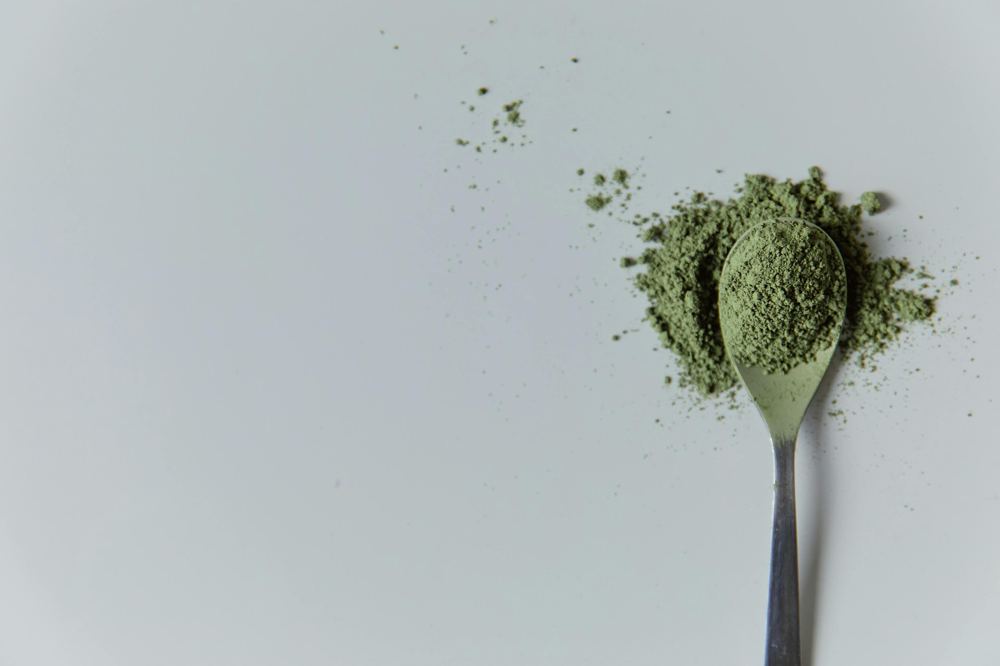

Guardians of the Gut

为什么使用植物乳植杆菌DT88?
p
文献发现，乳酸菌中的植物乳植杆菌DT88能的像活性炭一样吸附微塑料。
如果我们赋予其降并让其在肠道定植，就能有解微塑料的功能，效重塑肠道环境。

乳酸对体内质粒反应产生微塑料降解酶数量的影响
描述乳酸浓度与微塑料降解酶产量之间的关可以采用Michaelis-Menten动力学模型，
该转型常用于描述酶反应的速率与底物浓度之间关系。
我们提出多重革命性策略：
通过合成生物学改造益生菌Lactiplantibacillus plantarum DT88，实现了：

自动调节
在有/无进食时自动调节对微塑料的降解能力。

主动降解
使乳酸菌在光照时间过长或温度低于30℃时启动MazF自杀系统，从而实现在体外的可控灭活
肠道定植
将工程菌与低聚糖(一种膳食纤维)一同摄入, 可以帮助乳酸菌定植。

产品设计
将工程菌设计成即食乳酸菌冻干粉末，把一次的量放在一个小瓶子里
人们可以选择空口吃或者随水/温度不超过40度的食物一同吃下。